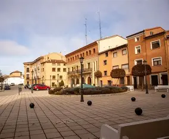
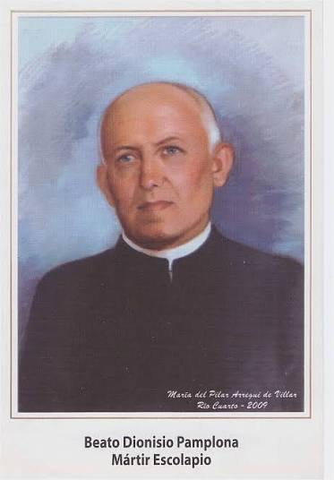

Biografia Dionisio Pamplona Polo
¿Quien fue?
Dionisio Pamplona Polo fue un sacerdote escolapio, educador y martir español. Fue una persona muy deidcada ala iglesia y ala educacion. Se destaco como profesor de humanidades, educador y pastor de alumnos. Tenia una fe muy fuerte, un caracter firme y era muy comprometido con las personas a las que a compañaba.
Su infancia y familia

Nació el 11 de octubre de 1868 en Calamocha(Teruel,España) y fue bautizado el mismo día en Santa María la Mayor. Hijo de Santiago Pamplona y Damiana Polo, creció en un hogar cristiano. Estudió en la escuela local y latín para prepararse a la vida religiosa.
Su ingreso en las Escuelas Pias
Superó el examen de admisión y vistió el hábito escolapio el 4 de noviembre de 1882 en Peralta de la Sal de la mano del P. Toribio Esteban. Tras 3 años de noviciado dedicado a piedad y letras, profesó votos simples el 4 de agosto de 1885. Estudió Filosofía en Irache y Teología, Cánones y Pedagogía en Cardeña (Burgos), donde hizo votos solemnes el 17 de noviembre de 1889. Fue ordenado sacerdote en Jaca el 7 de septiembre de 1893.
Su trabajo como educador
Dedicado a la educación calasancia. Primeros destinos: Java (1890), Sos del Rey Católico (1891) en la escuela de escribir, y Zaragoza (1895) Director de Escuela Superior y de colegiales mayores, enseñando Matemáticas y Agricultura.
En Alcañiz(oct. 1895-1903) enseñó Matemáticas, Filosofía, Literatura e Historia Literaria, llevando también economía y secretaría. Se destacó por escritos en prosa, verso, latín y castellano y fue Secretario del Jurado en los Juegos Florales de 1901.
En 1903 partió en expedición a Argentina: Casa de la Maternidad en Buenos Aires y Córdoba como profesor, prefecto y superior (1903-1913). Regresó en 1913 a Zaragoza, luego fue Maestro de Novicios en Peralta y finalmente Rector del Colegio-Noviciado de Peralta de la Sal (1930-1936).
Dionisio y la guerra civil
En 1936, durante la persecución religiosa, Dionisio asumió la parroquia de Peralta de la Sal porque el párroco se había ido por las amenazas. Siguió dando misa, bautismos y atendiendo enfermos.
El 23 de julio milicianos de Binéfar cercaron el colegio amenazando con quemarlo. Para salvar a los 35 de la comunidad, aceptó evacuar y los llevaron presos a una casa-cárcel. El 24 a la mañana aprovechó que no había guardias, fue a la iglesia a celebrar su última misa y proteger el Santísimo. Al salir le pidieron las llaves a punta de escopeta y dijo: "No las entregaré sino al obispo que me las confió." Se las sacaron a la fuerza y lo llevaron a Monzón.
El martirio

El 24 de julio, sin guardias en la puerta, fue a la parroquia a proteger el Santísimo, celebró su última misa y consumió las formas. En la plaza le exigieron a punta de escopeta las llaves y dijo: “No las entregaré sino al obispo que me las confió”. Le fueron arrebatadas, lo llevaron a Monzón, estuvo 24 y 25 de julio confesando y dando ejemplo de resignación. El 25 a las 11 de la noche, en la plaza hoy De Los Mártires, fue fusilado al grito de ¡Viva Cristo Rey! Fue el primer escolapio mártir de 1936.
Condicion dentro de la iglesia
El documento apostólico Beati Estis, Carta Apostólica promulgada por el Papa Juan Pablo II el 1 de octubre de 1995, decretó la beatificación del siervo de Dios Dionisio Pamplona y sus 12 compañeros mártires de la Orden de las Escuelas Pías. Los trece religiosos habían dedicado su vida a la educación de los niños.
La Iglesia lo considera mártir porque reconoce que murió por odio a la fe. Es presentado como presbítero y mártir, modelo de fidelidad en medio de la violencia, no como héroe de guerra sino como maestro de jóvenes incluso en el momento de la muerte.